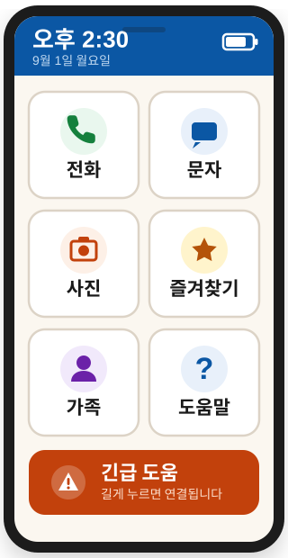
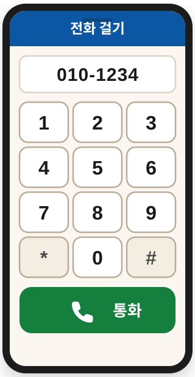
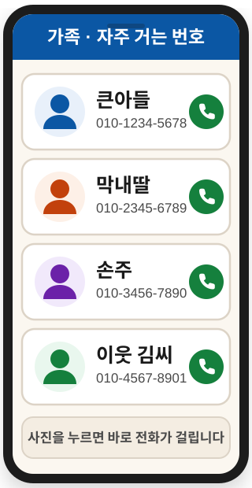

스마트폰이 다시
쉬워집니다
글씨는 크게, 버튼은 큼직하게. 자주 쓰는 기능만 남겼습니다. 설치만 하면 늘 쓰던 스마트폰이 보기 편한 화면으로 바뀝니다.
- 돋보기 없이 읽히는 큰 글씨
- 잘못 누를 걱정 없는 큰 버튼
- 가족 사진을 누르면 바로 전화
- 쓰던 번호·사진·앱은 그대로

스마트폰이 어려운 건
어르신 탓이 아닙니다
화면이 작은 글씨로 가득하고, 버튼은 손끝보다 작습니다. 88Phone은 그 반대로 만들었습니다.
지금 보통 스마트폰
- 글씨가 작아 안경을 써도 잘 안 보입니다
- 버튼이 작아 옆 것을 잘못 누릅니다
- 안 쓰는 앱이 화면을 가득 채웁니다
- 전화 한 통 걸려면 여러 번 눌러야 합니다
- 모르는 창이 떠서 당황스럽습니다
88Phone 설치 후
- 한눈에 읽히는 큰 글씨
- 손가락으로 편하게 누르는 큰 버튼
- 자주 쓰는 기능만 화면에 남습니다
- 가족 사진을 한 번 누르면 전화 연결
- 화면이 늘 같아서 헷갈리지 않습니다
꼭 필요한 것만, 크고 단순하게
큰 글씨 전화 걸기
숫자 버튼을 화면 가득 크게 키웠습니다. 눈이 침침해도, 손이 떨려도 정확하게 눌립니다.
사진으로 거는 전화
가족 얼굴 사진을 한 번 누르면 바로 통화가 시작됩니다. 이름을 찾아 헤맬 필요가 없습니다.
크게 보는 사진
찍은 사진과 받은 사진을 큰 화면으로 넘겨 봅니다. 손주 사진을 보기가 훨씬 편해집니다.
긴급 도움 버튼
화면 아래 큰 버튼을 길게 누르면 미리 정해 둔 가족에게 연결됩니다. 급할 때 헤매지 않습니다.
글씨 큰 문자
주고받은 문자를 큰 글씨로 보여 줍니다. 답장도 큰 자판으로 편하게 씁니다.
언제든 도움말
화면마다 "도움말" 버튼이 있습니다. 무엇을 누르면 되는지 큰 글씨로 알려 드립니다.
이렇게 생겼습니다
실제 앱 화면을 본떠 만든 그림입니다. 출시 후 실제 화면으로 바꿔 올릴 예정입니다.


세 번만 누르면 끝납니다
플레이스토어를 엽니다
아래 QR 코드를 카메라로 비추거나, "내려받기" 버튼을 누르시면 설치 화면이 열립니다.
설치 버튼을 누릅니다
초록색 "설치" 버튼을 한 번 누르고 잠시 기다리시면 됩니다.
홈 화면으로 지정합니다
앱을 처음 열면 안내가 나옵니다. "88Phone 사용"을 고르시면 설정이 끝납니다.
궁금한 점이 있으신가요?
아닙니다. 88Phone은 화면만 바꿔 주는 앱입니다. 저장된 전화번호, 사진, 문자, 이미 깔려 있는 앱은 그대로 남아 있습니다.
네, 언제든 되돌릴 수 있습니다. 설정에서 홈 화면을 원래 것으로 다시 고르시면 됩니다. 앱을 지우셔도 아무것도 사라지지 않습니다.
현재는 안드로이드 휴대폰(삼성 갤럭시, LG 등)에서만 쓸 수 있습니다. 아이폰은 홈 화면을 바꾸는 것이 제한되어 있어 지원하지 않습니다.
내려받아 쓰시는 데 요금은 들지 않습니다. 다만 앱을 내려받을 때 데이터를 쓰므로, 가능하면 와이파이가 되는 곳에서 설치하시길 권해 드립니다.
네. 가족 연락처와 긴급 도움 버튼은 자녀분이 미리 설정해 두실 수 있습니다. 한 번 정해 두면 어르신은 누르기만 하시면 됩니다.